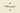

|
辛苦。“独有的国家理念”一栏所有的链接都指向英文页面，连不到下面去。--Jinrongcai（讨论） 2017年7月1日 (六) 20:43 (CST)
仍不能通过点击“通用的国家理念”处之索引链接至下方对应位置。--11111111111111111111111111111111（讨论） 2018年3月31日 (六) 22:59 (CST)
老哥，Domestic trade power有两个译名本土贸易力量和国内贸易力量，可以考虑统一一下吗白马 2020年6月11日 (四) 07:40 (CST)
考虑到下表所示的国家理念与国名的对应关系，国家信息模板可以把页面名称PAGENAME作为调用理念的缺省值，而少数不一样的国家再用idea=来指定。自由之民（讨论） 2020年6月12日 (五) 14:56 (CST)
参考资料
有专用国家理念的tag
此内容可能已落后版本，最后更新于1.34
/Europa Universalis IV/common/ideas/00_country_ideas.txt中涉及到的tag。
以下是所有有专用国家理念的tag：
 神圣罗马帝国
神圣罗马帝国 德意志
德意志 英格兰
英格兰 大不列颠
大不列颠 瑞典
瑞典 莫斯科
莫斯科 俄罗斯
俄罗斯 西班牙
西班牙 卡斯蒂利亚
卡斯蒂利亚- 尼德兰
 丹麦
丹麦 法兰西
法兰西 奥斯曼
奥斯曼 费拉拉
费拉拉 乌尔比诺
乌尔比诺 博洛尼亚
博洛尼亚 曼托瓦
曼托瓦- 佩鲁贾
 萨卢佐
萨卢佐 蒙费拉托
蒙费拉托 锡耶纳
锡耶纳- 卢卡
 维罗纳
维罗纳 威尼斯
威尼斯 普鲁士
普鲁士 勃兰登堡
勃兰登堡 葡萄牙
葡萄牙 波兰
波兰 波兰立陶宛联邦
波兰立陶宛联邦
- 立陶宛主流文化版本
- 非立陶宛主流文化版本
- 哈布斯堡
 大明
大明 波斯
波斯 勃艮第
勃艮第 热那亚
热那亚 苏格兰
苏格兰 匈牙利
匈牙利 日本
日本 马穆鲁克
马穆鲁克 那不勒斯
那不勒斯- 西西里
 阿拉贡
阿拉贡 莫卧儿
莫卧儿 帖木儿
帖木儿 吕贝克
吕贝克
- 普通版本
- 汉萨同盟版本
 米兰
米兰 拜占庭
拜占庭 毗奢耶那伽罗
毗奢耶那伽罗 阿瑜陀耶
阿瑜陀耶 挪威
挪威 阿曼
阿曼 朝鲜
朝鲜 波希米亚
波希米亚 意大利
意大利 满洲
满洲 大清
大清 普法尔茨
普法尔茨 诺夫哥罗德
诺夫哥罗德 埃塞俄比亚
埃塞俄比亚- 大越
 萨伏依
萨伏依 撒丁
撒丁 科西嘉
科西嘉 撒丁-皮埃蒙特
撒丁-皮埃蒙特 萨克森
萨克森 立陶宛
立陶宛
- 普通版本
- 升级版本
- 马拉塔
- 东吁
 阿瓦
阿瓦 格拉纳达
格拉纳达 教宗国
教宗国 塞尔维亚
塞尔维亚 奥里萨
奥里萨- 旁遮普
 拉古萨
拉古萨 达尔马提亚
达尔马提亚 琉球
琉球 阿萨姆
阿萨姆- 托斯卡纳
 美利坚
美利坚- 瑞士
 桑海
桑海 布列塔尼
布列塔尼- 内志
- 汉志
 尼泊尔
尼泊尔 医院骑士团
医院骑士团- 刚果
 马里
马里 休伦
休伦 易洛魁
易洛魁 奇克索
奇克索 切罗基
切罗基- 普韦布洛
 肖尼
肖尼 克里克
克里克 库尔兰
库尔兰 普罗旺斯
普罗旺斯 摩加迪沙
摩加迪沙 特拉比松
特拉比松- 格鲁吉亚
 阿富汗
阿富汗 瓦拉几亚
瓦拉几亚 克罗地亚
克罗地亚 塞浦路斯
塞浦路斯 纳瓦拉
纳瓦拉 阿兹特克
阿兹特克 达荷美
达荷美 卡奈姆-博尔努
卡奈姆-博尔努 狄奥多罗
狄奥多罗- 西里西亚
 但泽
但泽 克拉科夫
克拉科夫 阿朱兰
阿朱兰 梁赞
梁赞 特维尔
特维尔 雅罗斯拉夫尔
雅罗斯拉夫尔 普斯科夫
普斯科夫 斯摩棱斯克
斯摩棱斯克 波斯尼亚
波斯尼亚 黑塞哥维那
黑塞哥维那 摩尔达维亚
摩尔达维亚 阿伊尔
阿伊尔- 莫西
- 主流文化：mossi
- 富拉尼
 索科托
索科托- 有国家标识：fulani_jihad_state
 塔拉斯卡
塔拉斯卡 卡拉曼
卡拉曼 黑山
黑山 罗马尼亚
罗马尼亚 雅典
雅典 哥得兰
哥得兰 芬兰
芬兰 阿尔巴尼亚
阿尔巴尼亚 波洛茨克
波洛茨克 彼尔姆
彼尔姆- 阿散蒂
 马普切
马普切- 印加
 奇穆
奇穆 穆伊斯卡
穆伊斯卡 查查波亚
查查波亚 条顿骑士团
条顿骑士团 保加利亚
保加利亚 基辅
基辅- 纳克索斯
 塔普亚
塔普亚- 波美拉尼亚
 波美拉尼亚
波美拉尼亚- 主流文化：pommeranian
 喀山
喀山- 亚美尼亚
- 威尔士
- 豪萨
 瓜拉尼
瓜拉尼 查鲁亚
查鲁亚 切尔克西亚
切尔克西亚 澜沧
澜沧 希瓦
希瓦 巴赫曼尼 宗教组：muslim
巴赫曼尼 宗教组：muslim 哈卜尚
哈卜尚 章普尔 宗教组：muslim
章普尔 宗教组：muslim 汉堡
汉堡 耶路撒冷 宗教组：christian
耶路撒冷 宗教组：christian 高棉
高棉 扎波罗热
扎波罗热 加拿大
加拿大 魁北克
魁北克 墨西哥
墨西哥 特兰西瓦尼亚
特兰西瓦尼亚 素可泰
素可泰 维尔茨堡
维尔茨堡- 斯里兰卡
 詹达尔
詹达尔 巴西
巴西 加勒比
加勒比 贝宁
贝宁- 不莱梅
 荷尔斯泰因
荷尔斯泰因 黑森
黑森 阿拉干
阿拉干 诺森伯兰
诺森伯兰 明斯特
明斯特 图林根
图林根 塞米恩
塞米恩- 加泰罗尼亚
- 兰纳
 帕迦鲁荣
帕迦鲁荣- 苗
- 占婆
 巴登
巴登 萨地亚
萨地亚 曼尼普尔
曼尼普尔 勃固
勃固 古泰
古泰- 基切
 拉达克
拉达克 穆塔帕
穆塔帕 俾路支斯坦
俾路支斯坦 奥尔良
奥尔良 霍尔木兹
霍尔木兹 坎格拉
坎格拉 叶尔羌
叶尔羌 卢森堡
卢森堡 莱昂
莱昂- 彝
 下诺夫哥罗德
下诺夫哥罗德 萨米
萨米 马佐夫舍
马佐夫舍 加利西亚
加利西亚 讷韦尔
讷韦尔 梅德利巴赫里
梅德利巴赫里 大理
大理 扬马延
扬马延 蒂鲁德
蒂鲁德 马拉维
马拉维 罗马帝国
罗马帝国 托蒙德
托蒙德 斯莱戈
斯莱戈 安泰莫罗
安泰莫罗 贝齐米萨拉卡
贝齐米萨拉卡 梅里纳
梅里纳- 通布卡
- 卢巴
 库巴
库巴 隆达
隆达 布图阿
布图阿 德斯蒙德
德斯蒙德 摩腊婆
摩腊婆 北大年
北大年 咖法
咖法 科孚
科孚 洛林
洛林 符腾堡
符腾堡 尼特拉
尼特拉 金帐
金帐 大元
大元 安斯巴赫
安斯巴赫 拜罗伊特
拜罗伊特 纽伦堡
纽伦堡- 班贝格
- 奥多耶夫
 加瓦尔
加瓦尔 迪特马尔申
迪特马尔申 畠山家
畠山家 今川家
今川家 尼子家
尼子家 细川家
细川家 上杉家
上杉家 山名家
山名家 伊达家
伊达家 少贰家
少贰家- 小笠原家
 大友家
大友家 大内家
大内家 宇都宫家
宇都宫家 足利家
足利家 土岐家
土岐家 佐竹家
佐竹家 安东家
安东家 千叶家
千叶家 岛津家
岛津家 伊东家
伊东家 一色家
一色家 筒井家
筒井家 菊池家
菊池家 河野家
河野家 南部家
南部家 武田家
武田家 斯波家
斯波家- 别洛奥泽罗
 罗斯托夫
罗斯托夫 摩拉维亚
摩拉维亚- 爱沙尼亚
- 特里普拉
- 汉诺威
 不伦瑞克
不伦瑞克- 吕讷堡
 萨克森-劳恩堡
萨克森-劳恩堡 贝格
贝格 多特蒙德
多特蒙德 布雷根茨
布雷根茨 戈斯拉尔
戈斯拉尔 罗滕堡
罗滕堡 安哈尔特
安哈尔特 特伦特
特伦特 乌尔姆
乌尔姆 法兰克福
法兰克福 科隆
科隆 美因茨
美因茨 特里尔
特里尔 白羊
白羊 呼罗珊
呼罗珊 河中
河中 阿贾姆
阿贾姆 法尔斯
法尔斯 洛雷斯坦
洛雷斯坦 黑羊
黑羊 迈赫拉
迈赫拉- 也门
- 拉西
 穆沙沙
穆沙沙 锡斯坦
锡斯坦 罗姆
罗姆 阿尔达比勒 宗教：shiite
阿尔达比勒 宗教：shiite-  萨姆茨赫
 希尔凡
希尔凡 哈萨
哈萨 哈德拉毛
哈德拉毛 哈桑凯伊夫
哈桑凯伊夫 北畠家
北畠家 织田家
织田家 德川家
德川家 马加斯
马加斯 武端
武端 宿务
宿务 阿伊努
阿伊努 北条家
北条家 长宗我部家
长宗我部家 毛利家
毛利家 朝仓家
朝仓家 基尔代尔
基尔代尔 蒂龙
蒂龙 蒂康奈尔
蒂康奈尔 芒斯特
芒斯特 伦斯特
伦斯特- 克兰里卡德
 奥蒙德
奥蒙德 爱尔兰
爱尔兰 阿尔斯特
阿尔斯特 奥法利
奥法利 康沃尔
康沃尔 马恩
马恩 米斯
米斯 弗里斯兰
弗里斯兰 乌得勒支
乌得勒支 佛兰德
佛兰德 布拉班特
布拉班特 列日
列日 海尔雷
海尔雷 东弗里斯兰
东弗里斯兰 亚琛
亚琛 克莱沃
克莱沃 德干
德干 德里
德里 婆罗多
婆罗多 印度斯坦
印度斯坦 拉杰普塔纳
拉杰普塔纳 那格浦尔
那格浦尔 梅瓦尔
梅瓦尔 孟加拉
孟加拉 古吉拉特
古吉拉特 信德
信德 敦达尔
敦达尔 迈索尔
迈索尔 里加
里加 克里米亚
克里米亚 切尔尼戈夫
切尔尼戈夫- 伊利汗国
 智械
智械 摩洛哥
摩洛哥 突尼斯
突尼斯 得克萨斯
得克萨斯 澳大利亚
澳大利亚 西兰蒂亚
西兰蒂亚 阿拉斯加
阿拉斯加 卡斯卡迪亚
卡斯卡迪亚 西印度群岛
西印度群岛 索诺拉
索诺拉 佛蒙特
佛蒙特 阿斯图里亚斯
阿斯图里亚斯 安达卢西亚
安达卢西亚 宗家
宗家- 瓦剌
 蒙古
蒙古 察合台
察合台 大顺
大顺 诺曼底
诺曼底 比萨
比萨 伊庇鲁斯
伊庇鲁斯- 洛塔林吉亚
- 法兰克尼亚
 卢萨蒂亚
卢萨蒂亚 采列
采列 威斯特伐利亚
威斯特伐利亚 施瓦本
施瓦本 三同盟
三同盟 日内瓦
日内瓦 冰岛
冰岛 满者伯夷
满者伯夷- 亚齐
 巴厘
巴厘 巽他
巽他 马六甲
马六甲 文莱
文莱 马来亚
马来亚 暹罗
暹罗 兰芳
兰芳 洛坤
洛坤 巴邻旁
巴邻旁 万丹
万丹 苏禄
苏禄 井里汶
井里汶 提维
提维 约拉
约拉 高纳
高纳 帕拉瓦
帕拉瓦 拉拉基亚
拉拉基亚 卡米勒罗伊
卡米勒罗伊 汤加
汤加 萨摩亚
萨摩亚 以色列
以色列 奥约
奥约- 基尔瓦
 津巴布韦
津巴布韦 阿克苏姆
阿克苏姆- 索马里
 基塔拉
基塔拉 努比亚
努比亚 阿达尔
阿达尔 卓洛夫
卓洛夫 祖鲁
祖鲁 奥格斯堡
奥格斯堡 卡累利阿
卡累利阿 利沃尼亚骑士团
利沃尼亚骑士团 利沃尼亚
利沃尼亚 拉特加尔
拉特加尔 布哈拉
布哈拉 斯堪的纳维亚
斯堪的纳维亚